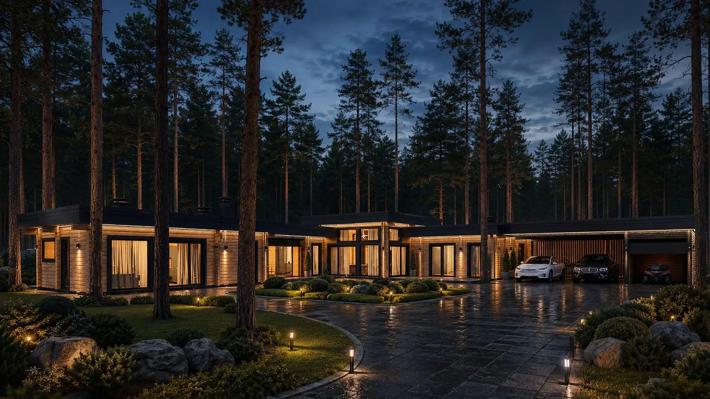
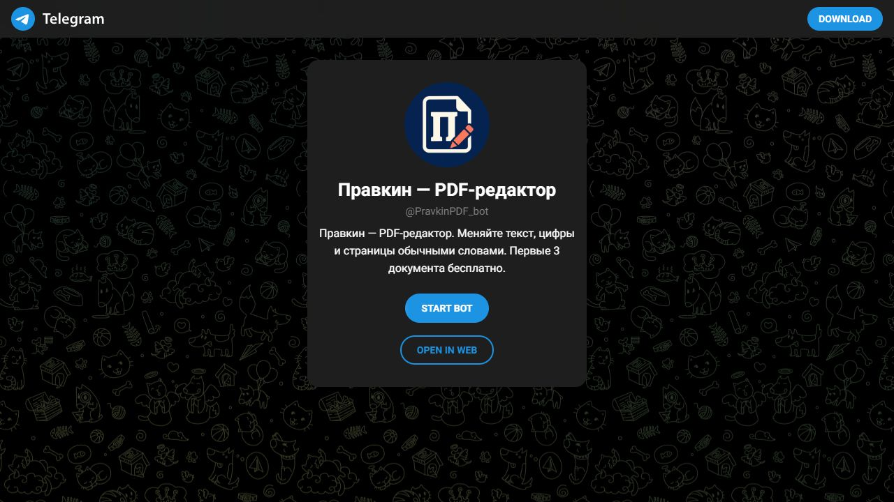

01 / Cinematic architectural website
Loki
A house revealed like a short film.
Websites · Interactive experiences · Telegram bots
I build clear interfaces, considered motion and useful conversations — from architectural stories to everyday document workflows.

01 / Cinematic architectural website
A house revealed like a short film.

02 / Interactive property experience
Could you picture your life here?

03 / Telegram PDF editor
One small change. One simple conversation.